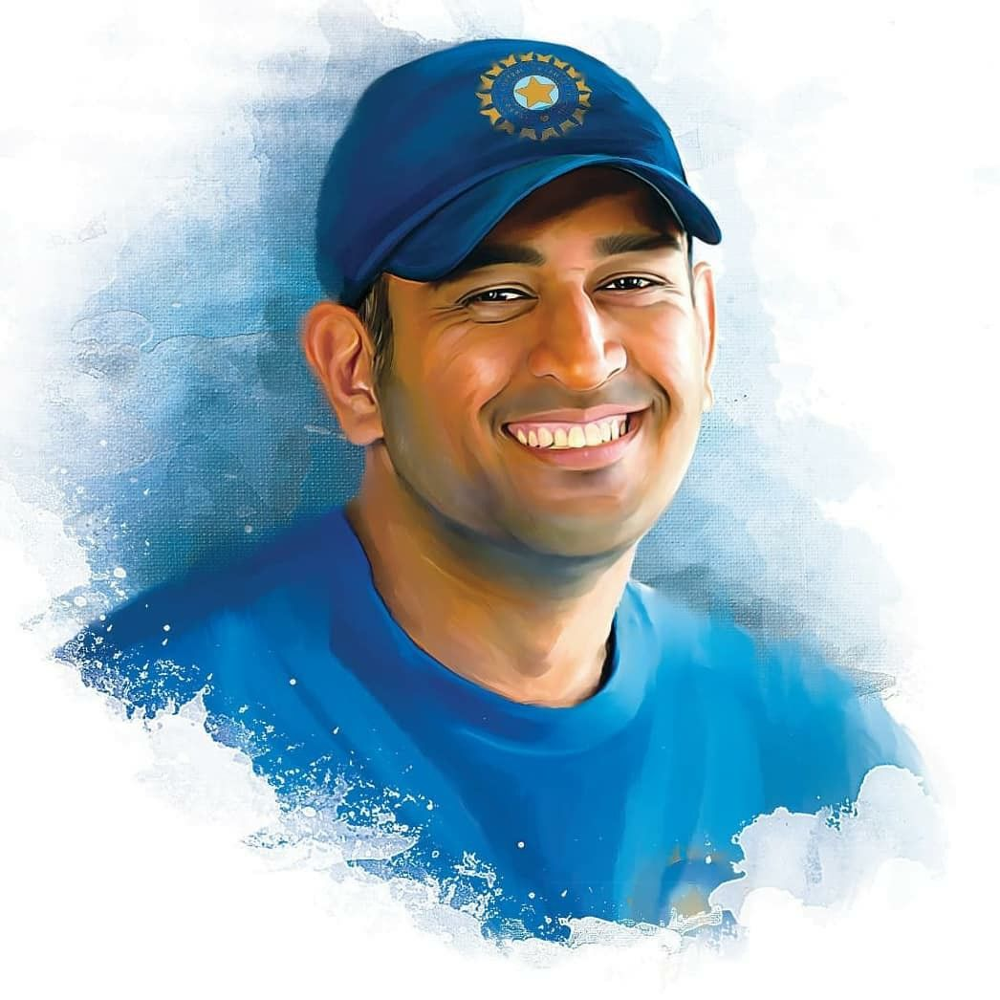

"Leadership is the capacity to translate vision into reality."
Dhoni announced his retirement from international cricket in 2020 but continues to play in the IPL for the Chennai Super Kings. Despite no longer playing for India, his legacy in the sport remains unmatched.
MS Dhoni is a true legend of Indian cricket, and his achievements will continue to inspire generations to come. He will forever be remembered as a captain who led by example, a batsman who entertained millions, and a wicketkeeper who revolutionized the game.
In addition to his cricket career, Dhoni is also a successful entrepreneur and philanthropist. He has invested in various businesses and has established the MS Dhoni Foundation to support underprivileged children.
Dhoni's story is an inspiration to people of all ages and backgrounds. His journey from a small-town boy to one of the greatest cricketers of all time is a testament to the power of hard work, dedication, and perseverance.